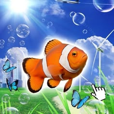
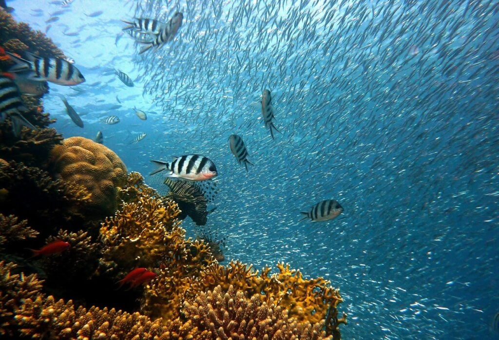

Morte de animais marinhos
Tartarugas, aves e peixes confundem o lixo com alimento ou ficam presos nele.

Oceano limpo, futuro vivo.
Plásticos, redes de pesca, embalagens e outros resíduos chegam aos oceanos por rios, esgotos e pelo descarte direto nas praias. Uma vez no mar, esse lixo pode levar décadas ou séculos para se decompor.
Tartarugas, aves e peixes confundem o lixo com alimento ou ficam presos nele.
Os plásticos se quebram em pedaços minúsculos (microplásticos) e contaminam a água e os corais.
Os microplásticos entram na cadeia alimentar e podem chegar aos alimentos que consumimos.
A poluição afasta turistas e prejudica a pesca e as comunidades que vivem do mar.

